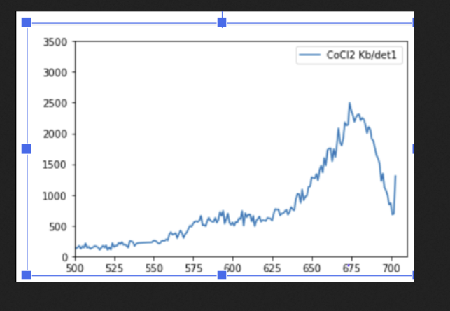
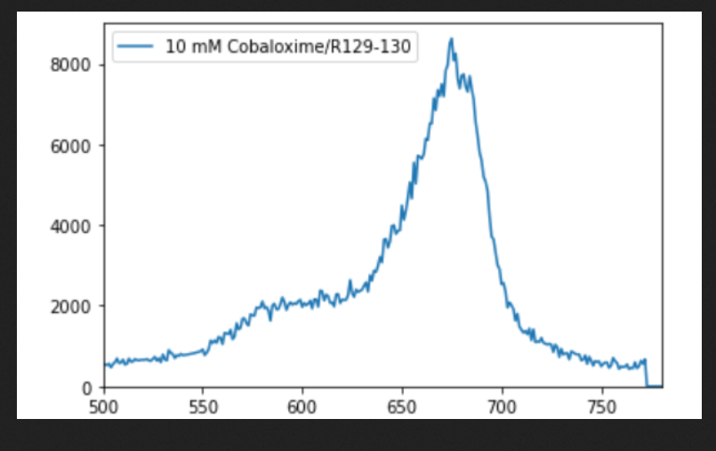
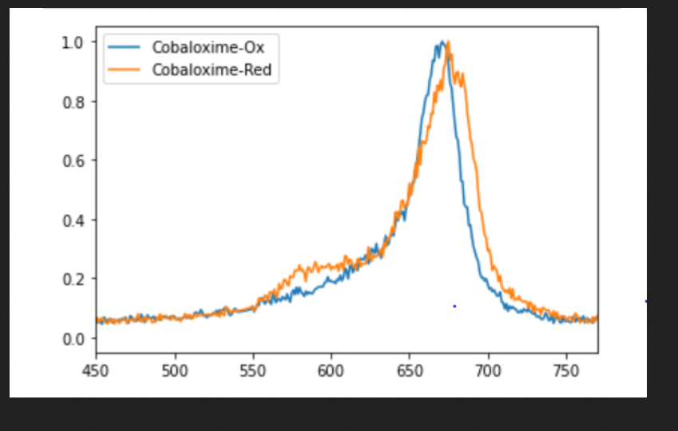

DoT
MFX Droplet on Tape (DOT) Operations Notes
MFX X-1001621
Last Revised: 08/18/2023
By: Victor Sosa Alfaro
Procedures
- Start up
- Align beam
- Setup DOT
# launch MFX home gui
mfxhome
# start the daq
restartdaq
# start camViewer session
camViewer -w 100
# launch python 3 session
mfx3
# bring up LFE home, should bring up current stable version (one in MFX home may not be current)
lfe
- ePix100_1: go to idle, issue epix tripped temp is 16, dewpoint set
to 20, reduce dewpoint # to 15 and try idling again, then turn on;
helium flow was off
- Humidity ~15% and 19% for epix_1 and epix_2 now, still tripping
- Epix_1 down to ~10%
- [camviewer - look at xcs_yag3m (farthest downstream on the mainline)
- Pull up eloggrabber (LCLS tab in MFX Home)
- MFX Home - middle click and open in new window to have certain things from MFX home in separate window, do that for attenuators
- To re-enable F12 key: Restart gnome shell: alt + f2 and typing r in
command window
- [Terminal: gnome-settings.sh]
- Moves in pulse picker, blocks beam
- MFX Home > LCLS > HOMS overview: MR1L4 is MFX/MEC mirror
- [python: tfs.find_best_combo(energy = 9800)] - does it work?
- Transfocator has 9 different lenses, for a given energy, need
particular combo of lenses
- Look at MFX elog and find post at similar energy and use the lens settings
- Timeout error starting daq
- [Terminal: serverStat 172.21.24.123 cycle] to restart node (this node was the one in the error)
- [Terminal: serverStat 172.21.24.123 status]
- Once you can ssh into it, it should be good (takes several minutes to fully come back)
- Edit Config in DAQ > EVR, should be 30 Hz
- Rayonix have to connect directly to computer for it
- [ssh -X hsuser\@con-ics-mfx-rayonix]
- [killall procServ]
- [capxure]
- [cd ~/slac/]
- [./startDaqInterface_newcraydl] start DAQ process that was killed with the killall command
- DG2 STP 1 closed (delivers beam to CXI), will need to have it opened to see beam on xcs_yag3m
- XRT Common Vacuum window
- YAGs for MFX:
- UM6 (upstream of mirror for hutch 6) (not sure what this is in camVieiwer)
- MEC YAG0 (just after mirror)
- XCS YAG3M (HFX DG3:PIM & IPM)
- MFX_dia_yag (dia = diagnostics stand, right after MFX stopper, equivalent of SB at XCS)
- Slowly
- MFX_DG1_YAG
- PIM DIA, IPM DIA
- Beam moved vertical positive by 80 um
- MFX_DG2_YAG (usually brighter w/ lenses in because it's after transfocator)
- MFX_DG3_YAG (after rayonix)
- Take cover off rayonix, slowly bringing up beam making sure centered on detector (Rayonix window in AMI)
- MFX Lens System (mfx home)
- For 9.8 keV: 50, 125, 250 radius in position (TFS04, TFS06, TFS09)
- EVR Trigger card (the physical card is between the beam pipes just before endstation):
- MFXhome > Laser > ns laser EVR
- We connected the camera to this card, set EVR to 42 (30 Hz)
- Focus
- LBL_inline camera, yag screen in place,
- Get focus right
- Cross hair #1 somewhere top left of spot, cross hair #2 bottom right, defining ROI for integration
- [Terminal: cd bin
- [focus_scan --h] get help to see how it runs
- [focus_scan {camera name} --scan] camera PV = MFX:GIGE:LBL:01 (does not take the alias)
- [Terminal: camViewer -c LBL_Inline -m] bring up config window
- Ref laser "in" position is 54 mm
- Align von Hamos Fe Kα and Kβ crystals
- Issues with alignment due to motor control connection/movement (encoder error), but was able to align Kα crystals
- Could not algin the Kβ due to a lack of signal in the VH detectors (the chamber is not under He which reduces signal to noise)
- Insert/move Rayonix into DOT chamber
- Collect dark background ( issues with connections: rayonix damaging only in 3x3 mode with or without even sequencer. 4x4 works and 5x5 seemingly worked)
8/19/2023
- XRT Spectrometer = FEE-SPEC0_H in DAQ
- In XRT, gives single shot beam profile
- Useful for crystallography to have shot-to-shot energy distribution for correct indexing of the Bragg peaks
- Talking to Newport controller
- Franklin Sample Delivery window in MFX Home
- "Newport screen", try "Initialize All", Try "Reboot IOC" in top right of window
- [Terminal: awr]: are we ready
- Current photon energy getting read is (PV1 SIOC:SYS0:ML00:A0627) at 1032.66 eV
- [capxsure]
- Frame Trigger Mode: None
- Exposure Type: Normal
- Click Collect New Background
- Change exposure type to Dark then collect new background
- Then turn exposure type back to normal
- [./startDaqInterface_newcraydl]
- Restart DAQ
- Checking mfx_dia_yag
- Make sure s4.5 stopper open, pp open
- Checking beam then on mfx_dg1_yag
- Can walk down beamline on MFX home
- Checking beam then on mfx_dg2_yag
- Jaws ~0.7 mm open
- Took off Rayonix cover to see beam on mfx_dg3_yag (post detector)
- Slowly unattenuating
- Bring in Rayonix into DOT chamber
- Move in the z- directions initially position should be at 1100mm
- Slowly move by 100mm steps until we get to 800mm then move by 50mm steps until we get to 250mm then smaller steps until we get to 188mm (final position)
- *During movement always have clicker ready to stop incase an issues arises
- Plan to run samples:
- Fe(bpy)3 [10mM]
- Ferri cyanide [9mM]
- Ferro cyande [10mM]
- To run samples:
- initially bring in beam by removing stopper on door screen (Remove 43) and open pulse picker (PP)
- Slowly unattenuating from [att(1e-6)] to 10% [att(1e-1)] then full beam [att(1)]
- Make sure we are in 30hz sequencer for timing is proper [ mfx_timing.set30hz()]
- Make sure pp is in flip-flop
- On DAQ clip on record and start run
- *If computer freezes just wait ~5-10mins until things get back to normal if this is not the case then call tech support.
- To end shift:
- remove Rayonix from 188mm to 1100mm (all at once no steps need unless they state it)
- take full screen in eblogger and type [end of shift]
- in terminal type [takepads]
- copy e-milano message and inset uniname
8/20/2023
- Visualize on first diagnostic yag
- PIM DIA
- Then visualize on DG1 yag
- DG1 slit width is open 0.85 mm
- Z Translation set to 120 mm for TFS
- [python: att(1e-9)]
- Taking pedastals is a way to get background [Samples for Co Kβ]{.ul}
CoCl2 run 122-126

Reduced Cobaloxime run 127-131

Oxidized Coblaloxime run 132-136

We can compare the CoCl2 counts with the reduced cobaloxime.
8/23/2023
Hydrogenase samples:
Switched the crystals to Ni kα
Then able to run samples (prepared inside the glovebox)
Used commands to run:
To turn on PP and to start run.